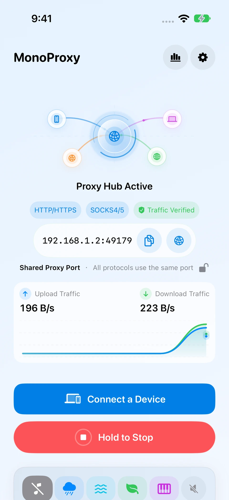
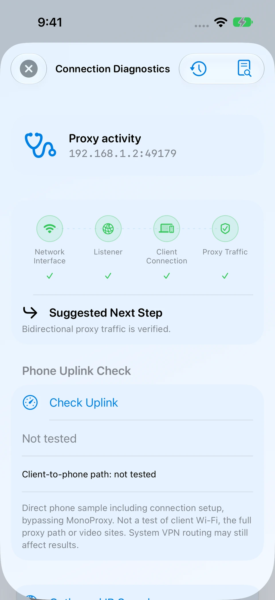
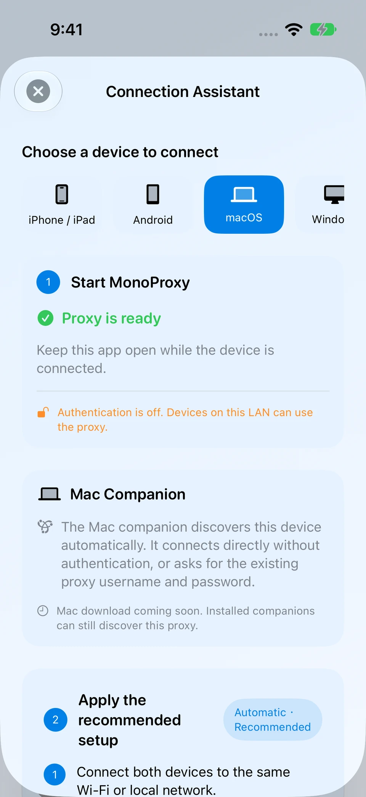
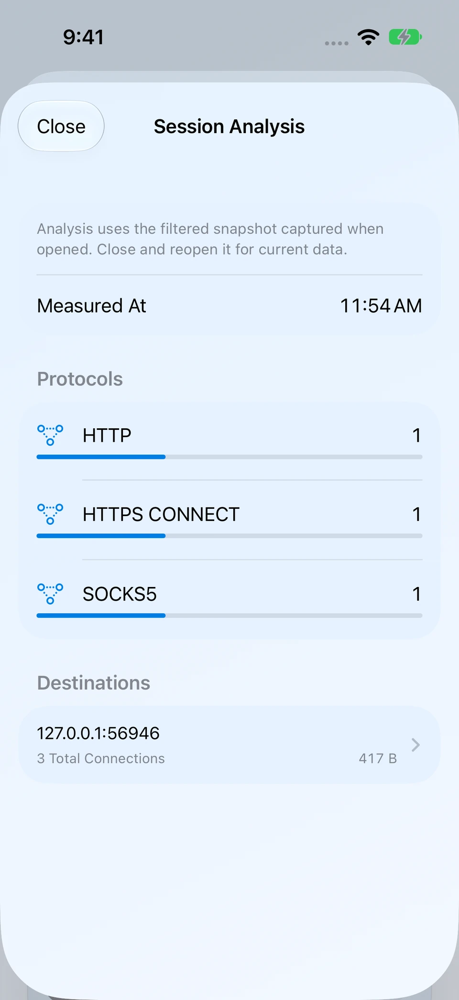
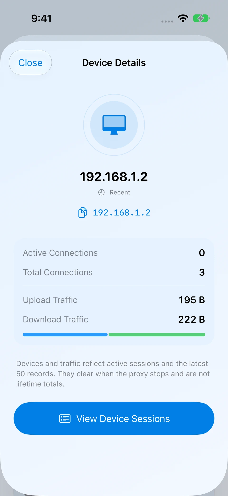
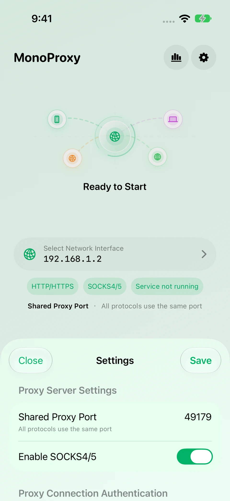
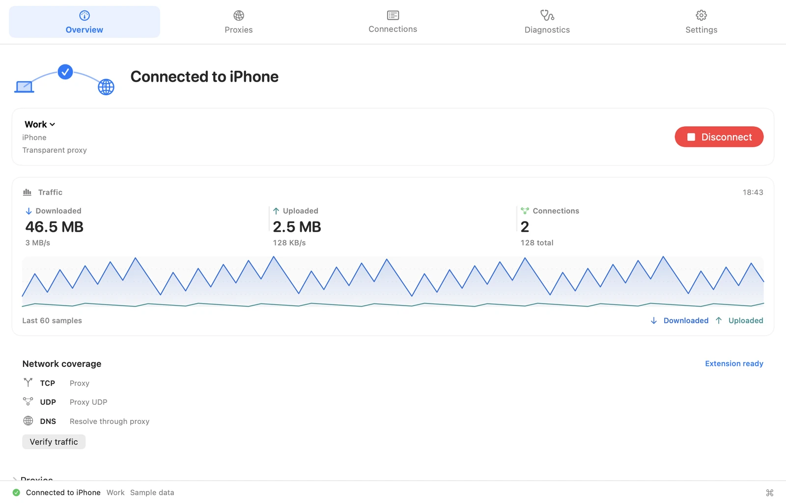
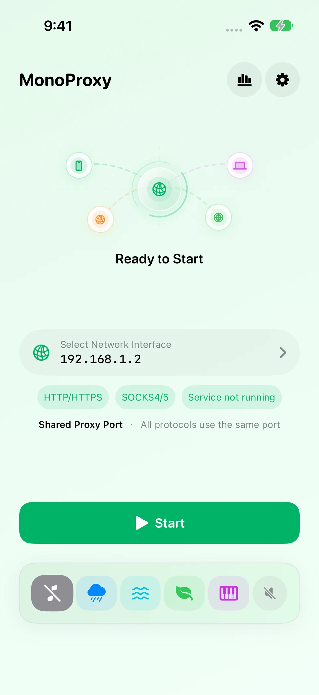
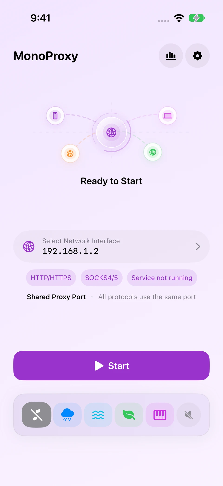
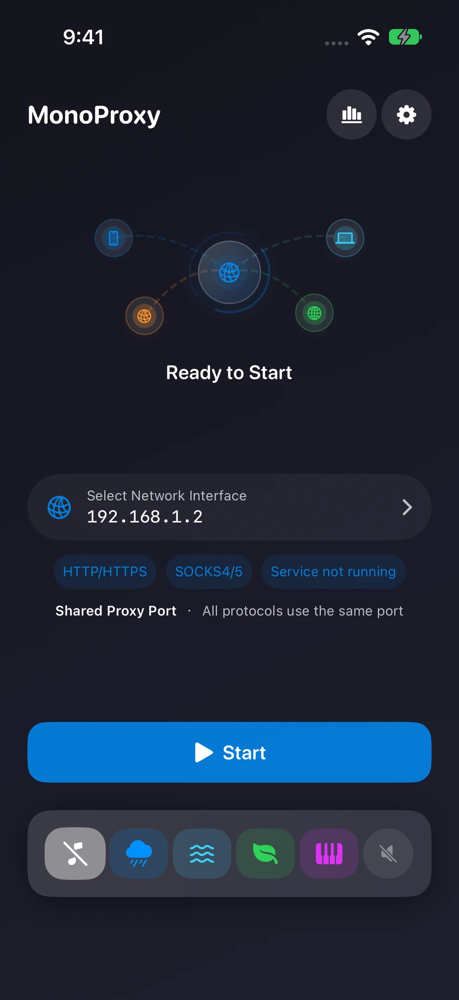

01
デバイス管理を拡充
状態での絞り込み、デバイス詳細、関連セッションへの移動、絞り込んだ記録の書き出しに対応。
iPhone で HTTP、HTTPS CONNECT、SOCKS プロキシを起動。同じローカルネットワークの Mac、Windows PC、テスト端末を接続し、接続状況と実際の通信を確認できます。
アカウント登録は不要。プロキシサービスは手元のデバイスで動作します。


デバイス詳細、セッション分析、接続診断を拡充し、設定の読み込みと書き出しを使いやすくしました。ネットワーク復旧、音声処理、実行時の保護も改善しています。
状態での絞り込み、デバイス詳細、関連セッションへの移動、絞り込んだ記録の書き出しに対応。
絞り込んだスナップショットをプロトコルと接続先で集計し、記録を確認・書き出しできます。
段階と結果で診断記録を絞り込み、リソース状態を確認。共有前に匿名化レポートをプレビューできます。
検索・並べ替え、読み込み変更のプレビュー、選択した設定の書き出し、パスワードを含めない複製に対応。
ネットワーク変更後の復旧を改善し、音声処理、認証の保護、リソース管理を見直しました。
MonoProxy は「ポートが開いている」「クライアントが接続した」「実際にトラフィックが流れた」を分けて表示し、それぞれの状態を正確に伝えます。
クライアントから到達できる Wi-Fi または LAN アドレスを選び、サービスを起動します。
アドレスをコピーする、設定をスキャンする、またはプラットフォーム別ガイドに従います。
Listening が Client Connected に変わり、バイト転送後に Traffic Verified になることを確認します。

MonoProxy を一度起動すれば、同じローカルネットワーク上の PC、タブレット、テスト端末を 1 つのエンドポイントへ向けられます。
最新の MonoProxy は設定を簡潔に保ちながら、必要なときに重要な詳細を表示します。
新しい iOS 画面 · シミュレータで撮影、ローカルのテスト通信を使用。画像を選択すると拡大します。
絞り込んだ記録をプロトコルと接続先で集計し、個々のセッションを確認して必要な内容を書き出します。

接続数と通信量を確認し、セッションを開いたり、必要に応じて切断やブロックを行えます。

ネットワーク、待受状態、クライアント、確認済み通信を個別に確認。診断レポートは共有前にプレビューできます。
「デバイスを接続」でプラットフォームを選び、手順に従います。macOS では Companion による検出と手動設定を案内します。
iOS アプリでテーマ、アニメーション、ポート、SOCKS、認証、ローカル履歴を管理します。

HTTP、HTTPS CONNECT、通常の WebSocket、SOCKS4、SOCKS4a、SOCKS5 は同じホストとポートを共有し、MonoProxy がクライアントプロトコルを自動判別します。
近くの MonoProxy サービスを自動検出し、プロキシ経路を確認。接続に失敗したら予備の設定を試し、Mac と iPhone の接続を簡単にします。
アドレスを毎回入力
同じローカルネットワーク上の起動中の MonoProxy を継続的に検出。設定として追加して接続できます。アドレスの手動入力も可能です。
プロキシ認証で何度も中断
プロキシの認証情報を macOS キーチェーンに保存。Companion が管理する接続は上流の認証を代行し、各アプリでの繰り返し入力を減らします。
ブラウザは使えるのに、ほかのアプリはつながらない
透過モードは対象アプリの接続を扱い、システムプロキシを無視するアプリにも対応。ルールでプロキシ、直接接続、遮断を指定できます。初回はネットワーク機能拡張の承認が必要です。
接続に失敗しても原因が見えない
接続記録、適用ルール、診断段階を確認して、次に調べる箇所を見つけます。
プロキシは見つかったが、使えるかは未確認
接続前に経路を検証し、接続後も現在の経路を継続確認。HTTP/HTTPS の確認先を設定したり、保存したプロキシを個別に確認できます。
プロキシが失敗するたびに選び直す
自動フェイルオーバーを有効にすると、接続失敗時に条件を満たす同じモードの予備設定を優先順に試します。互換モードは稼働中の障害検出後の切り替えにも対応します。
切り替え方針：検出一覧の更新で正常な接続は切り替えません。透過モードの確立済み接続が失敗すると、プロキシ通信を遮断して現在の上流を再試行します。切り替えで既存セッションが中断する場合があります。

両方を同じローカルネットワークに接続し、サービスを起動。「デバイスを接続」で macOS を選びます。
Companion で検出したサービスを設定として追加。検出できない場合は iPhone のアドレスとポートを入力します。
認証が有効な場合はプロキシのユーザー名とパスワードを入力して接続。ページを開き、iOS 側で通信を確認します。
Mac 用 Proxy Companion は別のアプリです。ガイドには macOS の手動設定もあります。
接続フローを変えずに、作業環境に合う配色を選べます。
明るく、落ち着き、集中しやすい

個性がありながら邪魔しない

暗い環境でも快適

MonoProxy は iPhone 上で動作し、アカウント、分析 SDK、リモートバックエンドを必要としません。暗号化接続は証明書のインストールや復号なしに中継されます。
プロキシ認証情報は端末内に残り、接続ログには表示されません。
プロファイリング、サードパーティ分析、リモートトラフィック収集はありません。
HTTPS トンネルは証明書のインストールや復号なしに中継されます。
ローカルホスト履歴とサイト合計は上限付きで、任意に有効化でき、いつでも消去できます。
iPhone で動くプロキシサーバーに近くのデバイスを接続。クライアントが対応するプロトコルを選びます。
はい。MonoProxy で SOCKS を有効にし、App に表示されるアドレスと共通ポートをクライアントに設定します。認証が有効な場合は同じプロキシ認証情報を入力してください。両方のデバイスが互いにアクセスできる同じローカルネットワークにある必要があります。
MonoProxy を起動し、クライアントの HTTP プロキシ設定にアドレスとポートを入力するか、PAC を使います。Mac では Proxy Companion でサービスを検出し、対応する App の接続を管理できます。詳細は設定ガイドをご覧ください。
MonoProxy はローカルの HTTP・HTTPS CONNECT・SOCKS プロキシサーバーです。ホスティング型のプロキシや VPN ネットワークは提供しません。クライアント App はローカルのプロキシアドレスを設定するか、対応するデスクトップクライアント経由で接続します。